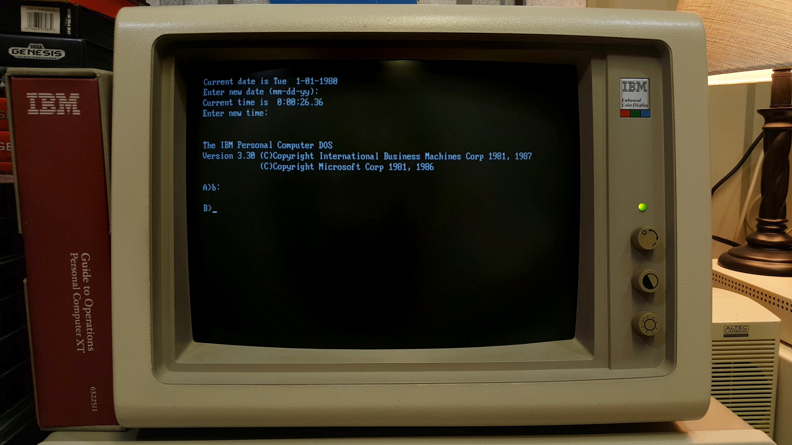
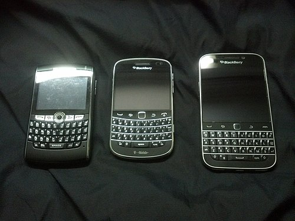

Command Line Interfaces (1970s–1980s)
The earliest computers required users to interact through typed commands directly into the machine. There were no icons, windows, or visual interfaces—just text on a screen and the user's knowledge of how to communicate with the system. This era demanded technical expertise and represented the foundation of human-computer interaction.

IBM Personal Computer with DOS
1981
The IBM PC brought command-line computing to homes and offices. Users typed commands like "dir" or "copy" to navigate files and execute programs. MS-DOS became the dominant operating system for IBM-compatible computers, requiring users to memorize commands and understand the file system structure. This interface prioritized efficiency for technical users who understood computer logic.
.png)
Commodore 64 BASIC Programming Interface
1982
The Commodore 64 democratized programming by introducing the BASIC language directly on home computers. Users typed BASIC commands to create games and applications, making programming part of everyday computer use. This era showed that computers weren't just for data entry—they were tools for creativity. The combination of affordable hardware and built-in programming capability represented a paradigm shift in personal computing.
Early Mobile Interfaces (1990s)
As computers became portable, designers faced a new challenge: how to create useful interfaces on small screens. The first smartphones emerged from attempts to combine personal organizers with mobile phones. Though primitive by modern standards, these devices introduced touchscreen input and proved that mobile devices had revolutionary potential.

IBM Simon Personal Communicator
1994
The IBM Simon is widely recognized as the first smartphone. It introduced a touchscreen interface that combined phone, messaging, calendar, and basic applications in a single device. Although the interface was crude and the battery lasted only about an hour, the Simon proved the concept of a mobile device that did more than make calls. This pioneering device showed the future direction of mobile computing and inspired decades of innovation.
Keyboard Smartphones (2000s)
The gap between early mobile devices and modern smartphones was bridged by phones with built-in physical keyboards. BlackBerry devices dominated business communication by offering excellent typing experiences and email-focused interfaces. These phones represented a transition period between traditional mobile phones and the gesture-based screens that would follow.

BlackBerry: 8820, Bold 9900, and Classic
2000s–2010s
BlackBerry phones became the device of choice for business professionals and government officials. The physical QWERTY keyboard enabled rapid email composition and messaging, while the interface prioritized productivity and security. BlackBerry's market dominance in the enterprise sector demonstrated that specialized interfaces for specific user needs could achieve massive success. However, this approach would soon be disrupted by the versatile touchscreen paradigm.
The Touchscreen Revolution (2007–2010)
Two devices fundamentally changed how people interact with technology. The iPhone introduced touchscreen-based interaction through familiar gestures, while the iPad proved that tablets could be powerful tools for media, productivity, and creativity. These devices didn't just change phones—they revolutionized mobile UI design and influenced every digital interface created since.

iPhone OS 3
2007–2009
The iPhone introduced a revolutionary interface paradigm: touchscreen interaction through intuitive gestures like tap, swipe, and pinch. Apps were represented by icons arranged in a grid, and the interface responded directly to finger input. The iPhone's success proved that users preferred direct, gesture-based interaction over physical keyboards. This design fundamentally changed how mobile interfaces were conceived, designed, and used across the industry.

First iPad
2010
The iPad expanded touchscreen interfaces into tablet computing with a larger screen perfect for media consumption, productivity apps, and creative tools. Its success influenced how designers think about responsive interfaces and multi-screen experiences. The iPad proved that tablets weren't just "big phones"—they were distinct devices requiring thoughtful interface design. This innovation shaped the development of apps and interfaces optimized specifically for touch interaction on large screens.
AI-Assisted Interface Design (2022–Present)
Modern user interfaces are increasingly influenced by artificial intelligence and advanced design tools. Rather than being constrained by traditional menus and commands, users now interact with systems through natural conversation, while designers leverage AI to create more intelligent, adaptive, and responsive experiences. This represents the most fundamental shift in human-computer interaction since the graphical interface revolution.
AI Assistants and Conversational Interfaces
2022–Present
AI assistants like ChatGPT represent a revolutionary approach to human-computer interaction. Instead of commands or menus, users interact through natural language—simply asking questions, requesting text generation, writing code, or solving problems through conversation. These conversational interfaces dramatically reduce technical barriers, making powerful computing capabilities accessible to everyone. This shift fundamentally changes how people think about technology: no longer machines that demand technical knowledge, but intelligent assistants that understand intent and communicate naturally. Modern AI systems act as interactive tools that collaborate with users rather than simply executing predetermined commands.

AI-Assisted UI Design and Modern Applications
2020s
Today's applications showcase visually rich interfaces built on mobile-first design principles, with icons, cards, and responsive layouts that adapt to any screen size. Crucially, modern design tools now incorporate machine learning to recommend layouts, organize content, and optimize user experiences automatically. Design platforms analyze user behavior patterns and suggest component arrangements that improve usability. Rather than manually designing every detail from scratch, designers now focus on guiding systems and shaping overall user experiences through AI-assisted workflows. This democratizes interface design—even non-experts can create polished, data-informed interfaces using AI design assistants that understand usability principles and design best practices.